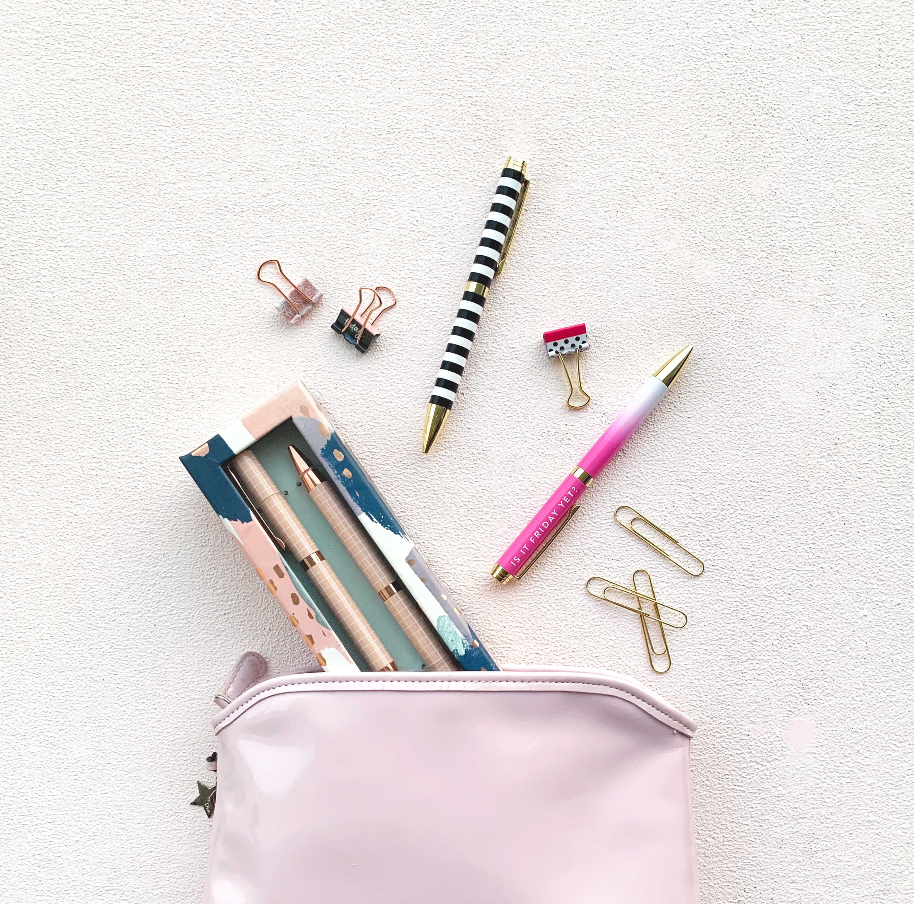

Print & Editorial · 05
Dream
Journals
Stationery Collection

Scroll
Concept
Dream Journals channels the intimacy of handwritten pages into a coherent product system. Each cover variant speaks to a different kind of dreamer — the planner, the wanderer, the archivist.
The collection pairs muted illustration with generous white space, letting the tactile quality of the paper do the editorial heavy lifting. Photoshop handles the warmth; Illustrator locks in the precision.


Cover Options


Interior

The interior grid is drawn from classical book proportions — a 9:5 ratio between the text block and the page. Ruled columns, folio numbers, and deliberate margin notes make each spread feel like a continuation rather than a start.
Accessories


